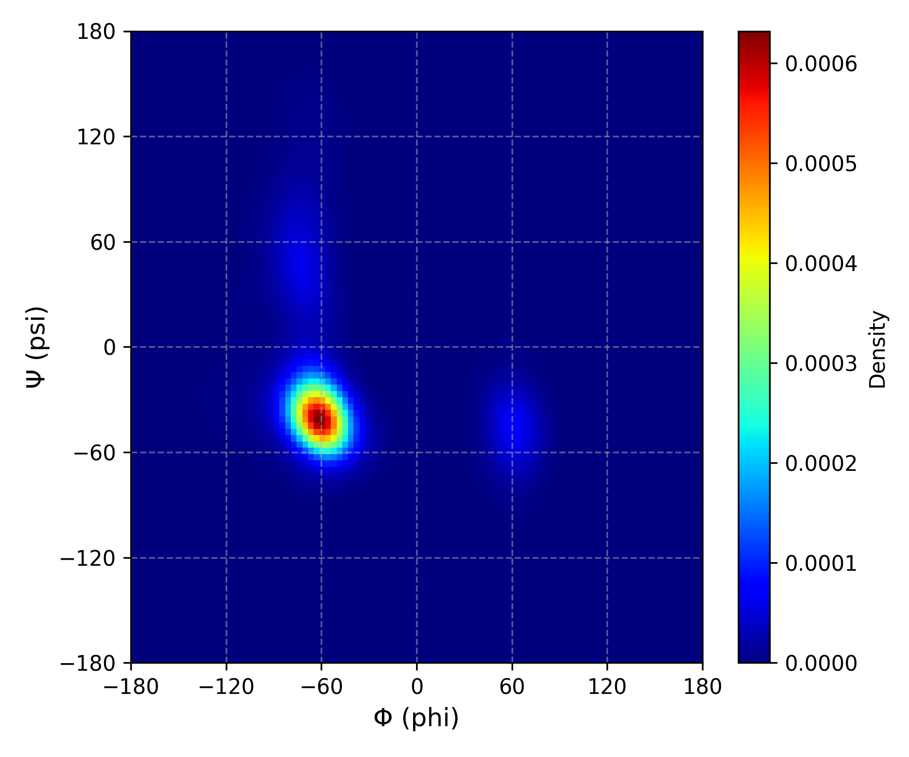

Phi and Psi Angles
Overview
DynamiSpectra provides a robust and flexible analytical framework for analyzing backbone dihedral angles φ (phi) and ψ (psi) of proteins throughout molecular dynamics simulations. Utilizing .xvg files generated from simulation outputs, this module enables detailed assessment of protein conformational preferences and structural dynamics by capturing the distribution and evolution of φ and ψ angles over time.
This analysis offers comprehensive insights into predominant conformations, conformational transitions, and rare structural states. The graphical outputs generated by DynamiSpectra facilitate clear visualization of protein backbone angular patterns, supporting both qualitative and quantitative interpretation of protein structural dynamics.
Command line in GROMACS to generate .xvg files for the analysis:
gmx rama -s Simulation.tpr -f Simulation.xtc -o rama_simulation.xvg
Note: DynamiSpectra generates individual phi and psi density plots for each simulation replica, as well as a combined density plot using data concatenated from all replicas. The concatenated density plot provides a comprehensive overview of the conformational space sampled across simulations, enabling identification of predominant structural states and improving statistical robustness compared to analyzing replicas separately.
def phipsi_analysis(output_folder, *simulation_file_groups, phipsi_config=None, residue_name=None)
{kind=link}

Interpretation guidance: This plot presents a color density map of the sampled backbone dihedral angles (phi and psi) of the protein or residue throughout the molecular dynamics simulation. Regions with stronger (more intense) colors indicate higher density, meaning the protein or residue spent more time adopting those angular conformations, reflecting preferred and stable states. Conversely, areas with weaker colors represent lower density regions with less frequent or transient conformations. This visualization provides valuable insights into the conformational flexibility and dynamic behavior of the protein during the simulation.
Complete code
import os
import numpy as np
import matplotlib.pyplot as plt
from scipy.stats import gaussian_kde
def read_rama(file_path, residue_name=None):
phi = []
psi = []
try:
with open(file_path, 'r') as f:
for line in f:
if line.startswith(('#', '@')) or line.strip() == '':
continue
parts = line.strip().split()
if len(parts) >= 3:
try:
phi_val = float(parts[0])
psi_val = float(parts[1])
res_name = parts[2]
if residue_name is None or res_name == residue_name:
phi.append(phi_val)
psi.append(psi_val)
except ValueError:
continue
return np.array(phi), np.array(psi)
except Exception as e:
print(f"Failed to read {file_path}: {e}")
return np.array([]), np.array([])
def kde_2d(phi, psi, grid_size=100, bandwidth=None):
values = np.vstack([phi, psi])
kde = gaussian_kde(values, bw_method=bandwidth)
x_grid = np.linspace(-180, 180, grid_size)
y_grid = np.linspace(-180, 180, grid_size)
X, Y = np.meshgrid(x_grid, y_grid)
grid_coords = np.vstack([X.ravel(), Y.ravel()])
Z = kde(grid_coords).reshape(grid_size, grid_size)
return X, Y, Z
def plot_phipsi_kde(results, output_folder, config=None, residue_name=None):
if config is None:
config = {}
grid_size = config.get('grid_size', 100)
cmap = config.get('cmap', 'jet')
alpha = config.get('alpha', 1)
figsize_subplot = config.get('figsize_subplot', (6, 5))
label_fontsize = config.get('label_fontsize', 12)
group_names = config.get('group_names', [])
num_groups = len(results)
fig, axes = plt.subplots(1, num_groups, figsize=(figsize_subplot[0]*num_groups, figsize_subplot[1]), squeeze=False)
for idx, (phis, psis) in enumerate(results):
ax = axes[0, idx]
X, Y, Z = kde_2d(phis, psis, grid_size=grid_size)
im = ax.imshow(
Z,
extent=[-180, 180, -180, 180],
origin='lower',
cmap=cmap,
alpha=alpha,
aspect='auto'
)
title = group_names[idx] if idx < len(group_names) else f'Simulation {idx+1}'
ax.set_title(title)
ax.set_xlabel('Φ (phi)', fontsize=label_fontsize)
ax.set_ylabel('Ψ (psi)', fontsize=label_fontsize)
ax.set_xlim(-180, 180)
ax.set_ylim(-180, 180)
ax.set_xticks(np.arange(-180, 181, 60))
ax.set_yticks(np.arange(-180, 181, 60))
ax.grid(True, linestyle='--', alpha=0.5)
fig.colorbar(im, ax=ax, label='Density')
plt.tight_layout()
os.makedirs(output_folder, exist_ok=True)
file_prefix = residue_name.replace('-', '_') if residue_name else 'all'
plt.savefig(os.path.join(output_folder, f'phipsi_kde_subplots_{file_prefix}.tiff'), dpi=300)
plt.savefig(os.path.join(output_folder, f'phipsi_kde_subplots_{file_prefix}.png'), dpi=300)
plt.show()
def plot_single_phipsi_kde(phi, psi, output_folder, config=None, label='Replica'):
if config is None:
config = {}
grid_size = config.get('grid_size', 100)
cmap = config.get('cmap', 'jet')
alpha = config.get('alpha', 1)
figsize = config.get('figsize_subplot', (6, 5))
label_fontsize = config.get('label_fontsize', 12)
X, Y, Z = kde_2d(phi, psi, grid_size=grid_size)
plt.figure(figsize=figsize)
plt.imshow(
Z,
extent=[-180, 180, -180, 180],
origin='lower',
cmap=cmap,
alpha=alpha,
aspect='auto'
)
plt.title(label)
plt.xlabel('Φ (phi)', fontsize=label_fontsize)
plt.ylabel('Ψ (psi)', fontsize=label_fontsize)
plt.xlim(-180, 180)
plt.ylim(-180, 180)
plt.xticks(np.arange(-180, 181, 60))
plt.yticks(np.arange(-180, 181, 60))
plt.grid(True, linestyle='--', alpha=0.5)
plt.colorbar(label='Density')
os.makedirs(output_folder, exist_ok=True)
safe_label = label.replace(' ', '_').replace('-', '_')
plt.savefig(os.path.join(output_folder, f'phipsi_kde_{safe_label}.png'), dpi=300)
plt.savefig(os.path.join(output_folder, f'phipsi_kde_{safe_label}.tiff'), dpi=300)
plt.show()
def phipsi_analysis(output_folder, *simulation_file_groups, phipsi_config=None, residue_name=None):
results = []
group_names = []
if phipsi_config is None:
phipsi_config = {}
if 'group_names' in phipsi_config:
group_names = phipsi_config['group_names']
for idx, group in enumerate(simulation_file_groups):
group_phi = []
group_psi = []
# Concatena todos os dados do grupo para o gráfico combinado
for file in group:
phi_vals, psi_vals = read_rama(file, residue_name=residue_name)
group_phi.extend(phi_vals)
group_psi.extend(psi_vals)
results.append((np.array(group_phi), np.array(group_psi)))
# Gera gráficos individuais para cada réplica e mostra no Jupyter
for i, file in enumerate(group):
phi_vals, psi_vals = read_rama(file, residue_name=residue_name)
label = f"{group_names[idx] if idx < len(group_names) else f'Simulation {idx+1}'} Replica {i+1}"
plot_single_phipsi_kde(np.array(phi_vals), np.array(psi_vals), output_folder,
config=phipsi_config, label=label)
if results:
plot_phipsi_kde(results, output_folder, config=phipsi_config, residue_name=residue_name)
else:
raise ValueError("No valid rama.xvg data provided.")